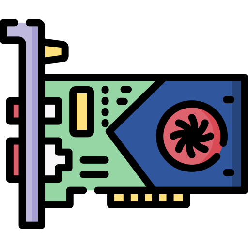
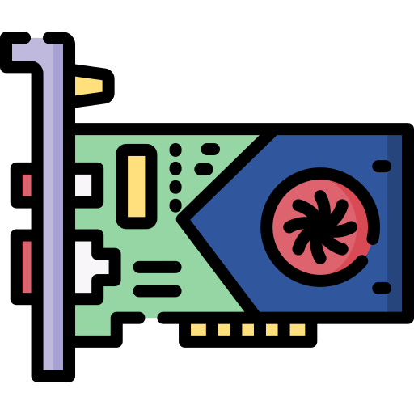

Компьютер - это цифровая электронная машина, которая может быть запрограммирована на автоматическое выполнение последовательностей арифметических или логических операций (вычислений). Современные компьютеры могут выполнять общие наборы операций, известные как программы. Эти программы позволяют компьютерам выполнять широкий спектр задач. Компьютерная система - это "полный" компьютер, который включает в себя аппаратное обеспечение, операционную систему (основное программное обеспечение) и периферийное оборудование, необходимое и используемое для "полной" работы.
Что такое комплектующие
Комплектующие- это электронные и механические части вычислительного устройства, входящие в состав системы или сети, исключая программное обеспечение и данные (информацию, которую вычислительная система хранит и обрабатывает). Подробнее о значении термина "Компьютерные комплектующие" можно прочитать на Википедии.
Классификация комплектующих
Комплектующими компьютера являются:
- Процессор
- Материнская плата
- Корпус
- Видеокарта
- Оперативная память
- Хранилище данных
- HDD(Жесткие диски)
- SSD
- Внешние хранилища
- Флешки, внешние HDD и SSD, DVD диски и т.д.
- Блок питания
- Охлаждение процессора
Основные комплектующие
Процессор
Или CPU (от англ. «to process» — «обрабатывать») — это программа или устройство,
предназначенные для обработки чего-либо.
Является центральным вычислительным элементом любого компьютера, управляет всеми остальными его элементами. Современный
микропроцессор — это прямоугольная пластинка из кристаллического кремния. На ее маленькой площади расположены схемы (транзисторы).
Материнская плата
Материнская — печатная плата, являющаяся основой построения модульного электронного устройства, например — компьютера.
Системная плата содержит основную часть устройства, например, в случае компьютера — процессор, системную шину или шины,
оперативную память, «встроенные» контроллеры периферийных устройств, сервисную логику — и разъёмы для подключения
дополнительных взаимозаменяемых плат.
Оперативная память
Оперативная память - это форма компьютерной памяти, которая может считываться и изменяться в любом порядке,
обычно используется для хранения рабочих данных и машинного кода.
Блок питания
Встроенный источник электропитания компьютера — устройство, предназначенное для преобразования напряжения переменного тока
от сети в напряжение постоянного тока с целью питания компьютера или компьютер-сервера.В некоторой степени блок питания также
выполняет функции стабилизации и защиты от незначительных помех питающего напряжения.
Видеокарта
Устройство, преобразующее графический образ, хранящийся как содержимое памяти компьютера (или самого адаптера),
в форму, пригодную для дальнейшего вывода на экран монитора. Обычно видеокарта выполнена в виде печатной платы
(плата расширения) и вставляется в слот расширения материнской платы, универсальный либо специализированный.


.png)
 

Комплектующие компьютера будут напрямую зависеть от задач, для которых он используется. Для любой работы с графикой(графический дизайн, игры, работа с движками, рендеринг видео) нужна достаточно мощная видеокарта. При необходимости компьютер может содержать несколько процессоров или несколько видеокарта для увеличения мощности.


.png)